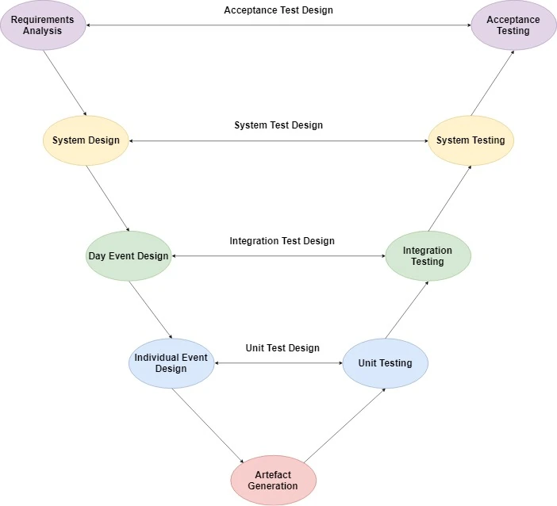

DFIR Sleuths
DFIR Sleuths
The testing plan for Digital Corpora followed a modified V software development model. This model was chosen as testing throughout the project’s life cycle was necessary and the project had a well-defined scope. Testing consisted of four phases: Unit Testing, Integration Testing, System Testing and Acceptance Testing.
- Unit testing consisted of testing events in the scenario timeline individually.
- Integration testing consisted of testing the impact of generating artefacts across an entire day.
- System testing involved testing the entire system to see if artefacts behaved as expected and that all the artefacts necessary for the scenario were present.
- Acceptance testing tied back to the requirements analysis which was used to ensure that the scenario generated conformed to what the client was expecting.
Testing was an integral part of our project as it helped to remove defects. Testing also had the side effect of instigating changes to the scenario which the team would argue added more value and depth to the scenario.
